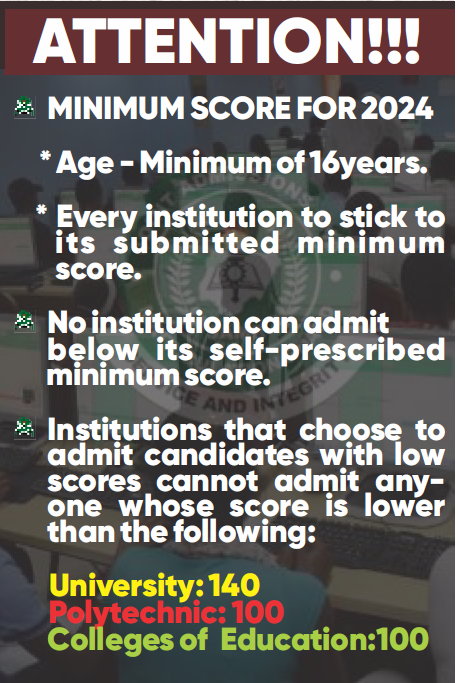
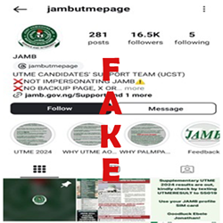

The 2024 Policy Meeting has approved the following minimum tolerable admisssion scores:
- Universities: 140- Colleges of Education: 100
-Polytechnics, Monotechnics, and Innovation Enterprise Institution (IEIs): 100
- The minimum age for admission into Tertiary institution this year (2024/2025 session) is sixteen (16) years.
MEET THE REGISTRAR

PROF. IS-HAQ OLANREWAJU OLOYEDE, CON, NPOM, FNAL
Is-haq Olanrewaju Oloyede is a Professor of Islamics and a Fellow of the islamic Academy Cambridge, United Kingdom; Fellow, Academy of Entrepreneurship; Fellow, Nigerian Institute of Management; Fellow, Institute of Arabic and Islamic Studies and Fellow, Nigerian Academic of Letters. He won the Arab League Prize for Best Final Year Certificate Student in Islamic Studies from the University of Ibadan in 1977.
THE JAMB MANDATE
The legal instrument establishing the Board was promulgated by the Act (No. 2 of 1978) of the Federal Military Government on 13th February, 1978. By August 1988, the Federal
Executive Council amended Decree No. 2 of 1978. The amendments have since been codified into Decree No. 33 of 1989, which took effect from 7th December, 1989. Decree No. 2 of 1978
(amended by Decree No. 33 of 1989) empowered the Joint Admissions and Matriculation Board to:
(a) conduct Matriculation Examination for entry into all Universities, Polytechnics and Colleges of Education (by whatever name called) in Nigeria
(b) appoint Examiners, Moderators, Invigilators, members of the Subject Panels and committees and other persons with respect to matriculation examinations and any other matters incidental thereto or connected therewith.
(c) place suitably qualified candidates in the tertiary institutions after having taken into account:
(i) the vacancies available in each tertiary institution
(ii) the guidelines approved for each tertiary institution by its proprietors or other competent authorities
(iii) the preference expressed or otherwise indicated by the candidates for certain tertiary institutions and courses
(iv) such other matters as the Board may be directed by the Honorable Minister to consider or the Board itself may consider appropriate in the circumstances.
(d) collate and disseminate information on all matters relating to admissions into tertiary institutions or any other matter relevant to the discharge of functions of the board.
(e) carry out other activities as are necessary or expedient for the full discharge of all or any of the functions conferred on it under or pursuant to this Decree .
ADVISORIES

NON-REGULAR ADVISORY EDITED 6TH JULY 2024

DISCLAMER
Attention Dear Candidates! Kindly be aware that the instagram account: jambutmepage, is a roguish account impersonating the genuine Board's social media account to defraud gullible Candidates. you are therefore, advised to steer clear of the platform and others of its kind. the JAMB official instagram account is jamb_hq, hence, any other account appropriating JAMB's name, logo, and website, is fraudulent
2024-2028 Strategic Roadmap for inclusive Access to Quality Higher Education (Download) UPDATED
Admission of candidates with minimum admissible age of 16 years
Quick Links
Jamb service website (E-facility)
Access candidates login page and payment for online services

SYLLABUS SYSTEM (IBASS)
Access JAMB integrated Brochure and syllabus system

JAMB CENTRAL REPORTING SYSTEM
Access Ticketing System for companies, enquires and helpline

CENTRAL ADMISSION PROCESSING SYSTEM
Access Central Admission Processing System
CENTRES MANAGEMENT SYSTEM
Access JAMB Center Management System
STOCK MANAGEMENT SYSTEM
Access JAMB stock Management System
JAMB CENTRAL REPORTING SYSTEM
Access JAMB Central Reporting SystemIBASS QR CODE
Scan the QR code to access IBASS